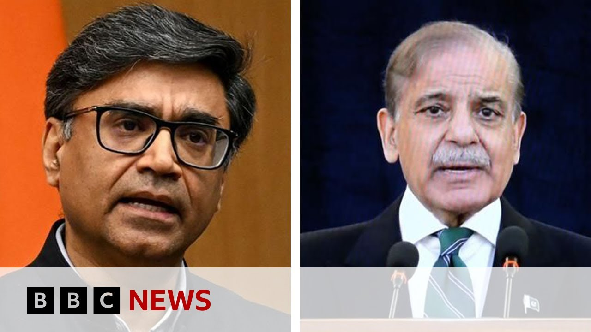

【印巴停火协议在相互指责违反后似乎得以维持 | BBC新闻】
Summary: A ceasefire between India and Pakistan appears to hold despite initial violations, with shops reopening in Pakistan-administered Kashmir, though many displaced residents remain hesitant to return amid ongoing tensions.
摘要： 尽管最初出现违反停火协议的情况，印巴停火似乎得以维持，巴基斯坦控制的克什米尔地区商店重新开业，但许多流离失所的居民在持续紧张局势中仍对返回犹豫不决。

⏱️ Estimated Reading Time: 4 min
A ceasefire between India and Pakistan appears to be holding after some initial violations which the two sides blame on each other.
印巴停火协议在双方相互指责最初违反后似乎得以维持。
Shops have become reopening in Pakistan-administered Kashmir.
巴基斯坦控制的克什米尔地区商店已重新开业。
Many residents who fled the fighting remain hesitant about returning.
许多逃离冲突的居民对返回仍持犹豫态度。
This is the border town of Chakothi which has faced the brunt of recent cross-border shelling.
这是边境城镇查科蒂，近期遭受了跨境炮击的主要冲击。
Pakistan Prime Minister Sheba Sharif has said her country is committed to peace, a response to Veena Gupta has said the truce from Srinagar in Indian-administered Kashmir.
巴基斯坦总理谢巴·谢里夫表示她的国家致力于和平，而维娜·古普塔在印度控制的克什米尔斯利那加回应称停火协议已达成。
This morning it's been an easy task in this area.
今早该地区的局势较为平静。
We are also spoken to locals along the Line of Control, the defunct border dividing Kashmir between India and Pakistan.
我们还与沿控制线（印巴分治克什米尔的失效边界）的当地居民进行了交谈。
Now locals in Uri one of the family members told that he had spent the night in a bunker with his family.
如今乌里的当地居民中，一名家庭成员表示他与家人在掩体中过夜。
He couldn't hear anyone shelling over night and is now out but his children are still in the bunker.
他整夜未听到炮击声，现已外出，但他的孩子们仍在掩体中。
Just going to show that how uneasy people are and his family is also about the ceasefire announcement ah for now.
这恰恰表明人们及其家庭对当前停火公告的焦虑。
We also spoke to another family in this question.
我们还询问了另一个家庭的情况。
Which was trying to go back to there home.
他们正试图返回家园。
Puch is one of the worst affected areas because of intense shell and cross border firings where homes have been hit.
普奇是受激烈炮击和跨境交火影响最严重的地区之一，房屋遭到损毁。
And lives have been lost.
并有人丧生。
But there is a sense of consciousness if I can sum up in that world.
但若要我总结，当地存在一种警觉意识。
In this reason because people are still waiting to see how and for how long in fact this agreement holds.
因为人们仍在观望这一协议实际能维持多久及如何维持。
So all eyes are on those diplomatic talks tomorrow.
因此所有人的目光都聚焦于明天的外交谈判。
This morning we heard from India's capital city Delhi that India's Prime Minister heads a top level meeting with all the defense officials.
今早我们从印度首都德里获悉，印度总理主持了一次与所有国防官员的高级别会议。
Will get to know more information around it.
我们将获取更多相关信息。
We are also waiting for information whether the schools and colleges will be open here in Srinagar where I am at which is again one of the most militant zones in the world we want to see whether a civilian air space will again be open for flights over here which also convey a sense that things are coming back to normal and normal for people who have been living under the shadow of conflict for decades here now this time round just last week things came to such an escalation for the first time in decades that locals here could see drones in the sky.
我们还在等待斯利那加（我所在的全球最动荡地区之一）的学校和大学是否开放的消息，同时关注民用领空是否会重新开放航班，这些都将传递出生活正回归常态的信号——对数十年来生活在冲突阴影下的居民而言。就在上周，局势数十年来首次升级至当地人目睹无人机在天空出现的程度。
They could see drones being intercepted in India and Pakistan came very close to the kind of conflict that has been seen here in decades and when I speak to people here all they want is peace for now.
他们目睹无人机在印巴被拦截，两国濒临数十年来未见的冲突边缘。而当我与当地人交谈时，他们此刻唯一的愿望就是和平。